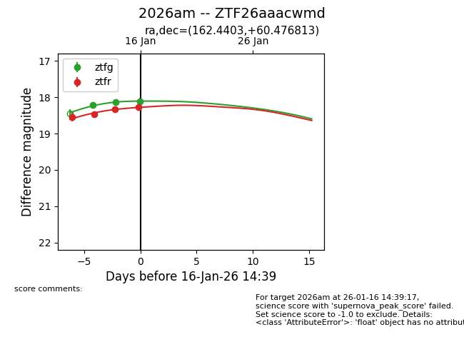
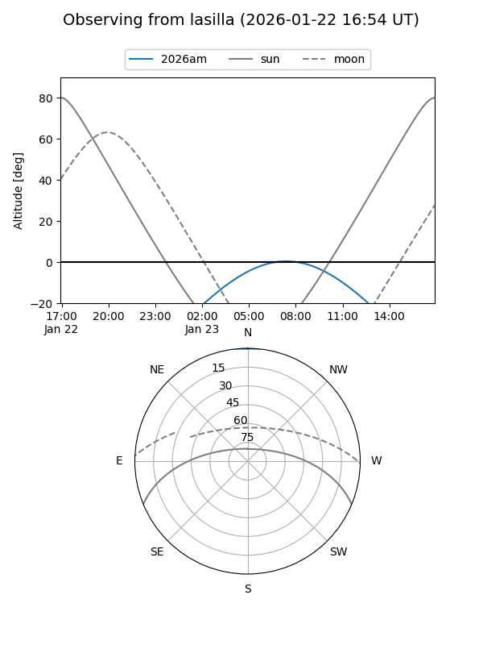
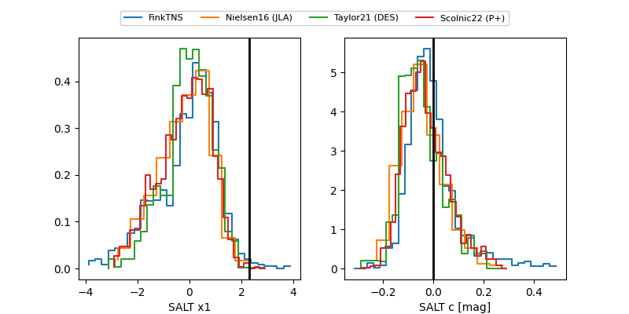

2026am
Target 2026am at 2026-01-29 01:51
Aliases and brokers:
FINK: link
Lasair: link
ALeRCE: link
TNS: link
YSE: link
alt names
ZTF26aaacwmd (ztf,fink_ztf)
2026am (tns,yse)
ATLAS26agq (atlas)
Coordinates:
equatorial (ra, dec) = 162.4403,+60.47681
equatorial (HMS+DMS) = 10:49:45.67,+60:28:36.53
galactic (l, b) = (146.1845,+50.80238)
Flags:
confirmed ia
Photometry:
last atlasc=18.20, atlaso=18.52, ztfg=18.64, ztfr=18.38
1 atlasc, 3 atlaso, 7 ztfg, 7 ztfr detections
Lightcurve

Visibility


Additional plots
